A sustainable strawberry packaging system that combines AR storytelling and reusable planters, turning everyday consumption into an experience of ecological reciprocity.
When
June to September 2026
Where
Shanghai and Los Angeles
Type
Independent project
My role
Research, concept, AR interaction and game design, packaging design, 3D modeling, and prototyping. The Unity prototype was built with AI-assisted coding.
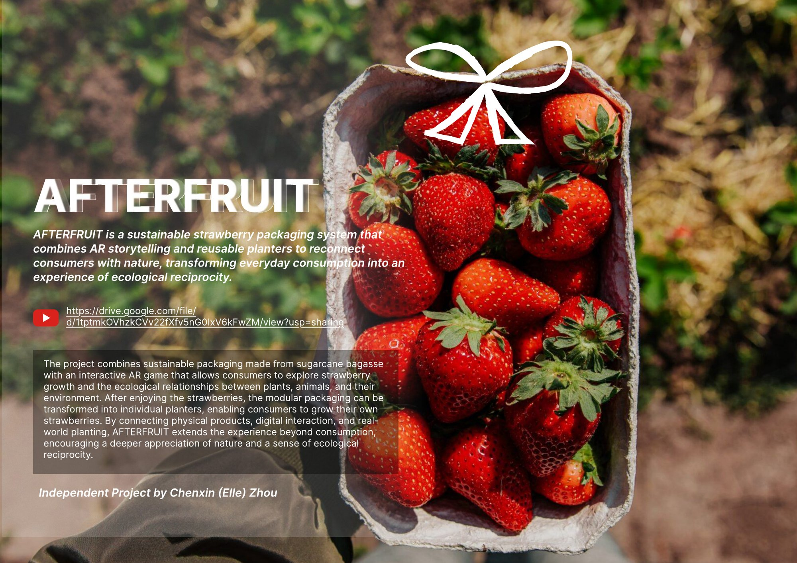
01 · Wood 木 · 生
When I was a child, my mother worked at Tony’s Farm. Every winter, I would visit the farm and pick strawberries directly from the field. For me, strawberries were associated with soil, care, and time spent close to nature.
Later, reading Robin Wall Kimmerer helped me understand that experience as one of ecological connection, care, and reciprocity.
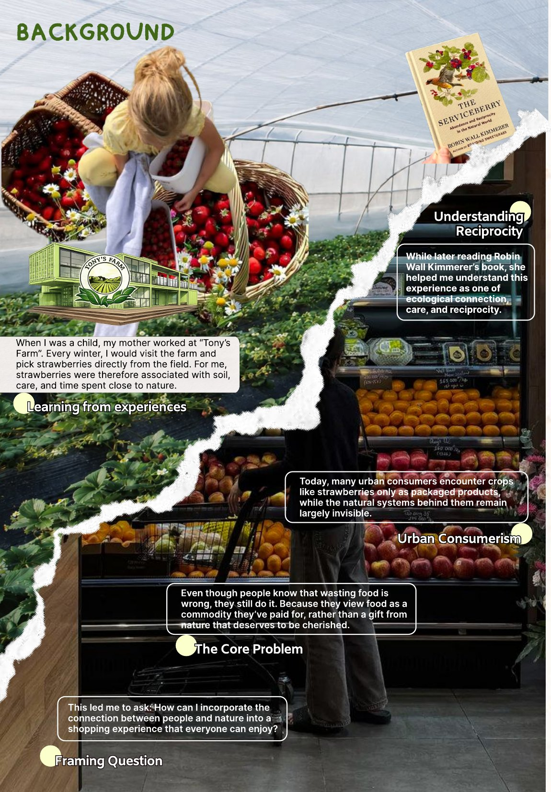
02 · Fire 火 · 长
Today, many urban consumers encounter crops like strawberries only as packaged products, while the natural systems behind them remain largely invisible. I looked at the problem from three sides: urban lifestyles that weaken our connection with nature, organic farms that struggle to communicate their values beyond the farm, and environmental education that raises awareness without changing behavior.
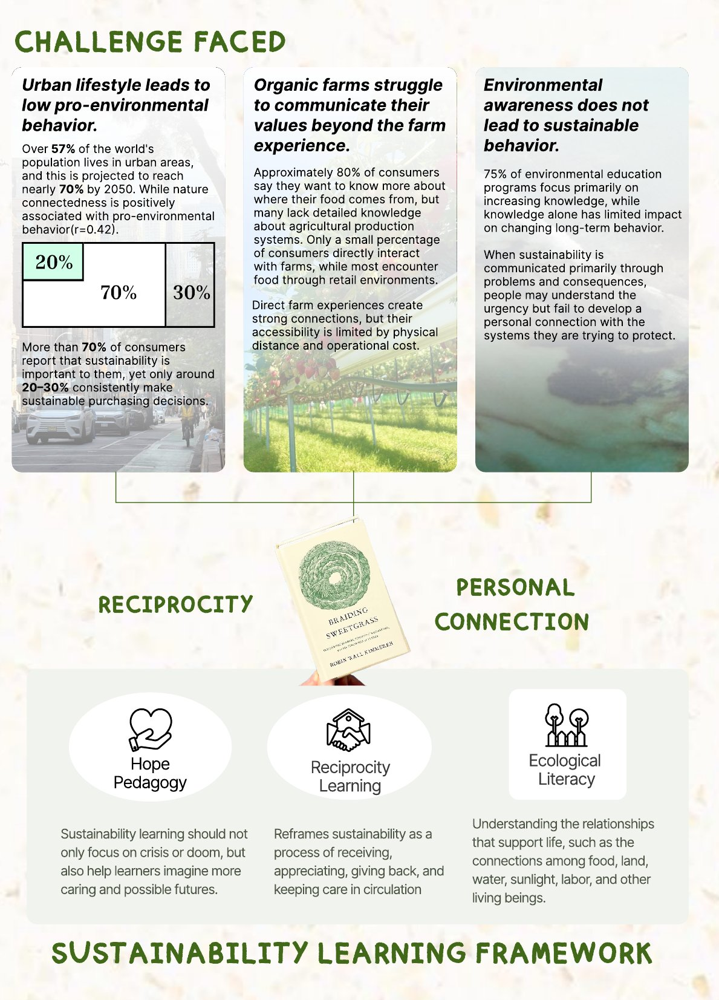
I interviewed a college student in Los Angeles and Tony Zhang, a farmer at Tony’s Farm, and ran a questionnaire. Sustainability felt distant to most respondents, and hands-on experiences created stronger learning than information alone. From this, I built two personas: Mia, a student who buys strawberries but feels no connection to how they are grown, and Frank, an organic farm manager whose story disappears once his fruit reaches the shelf.
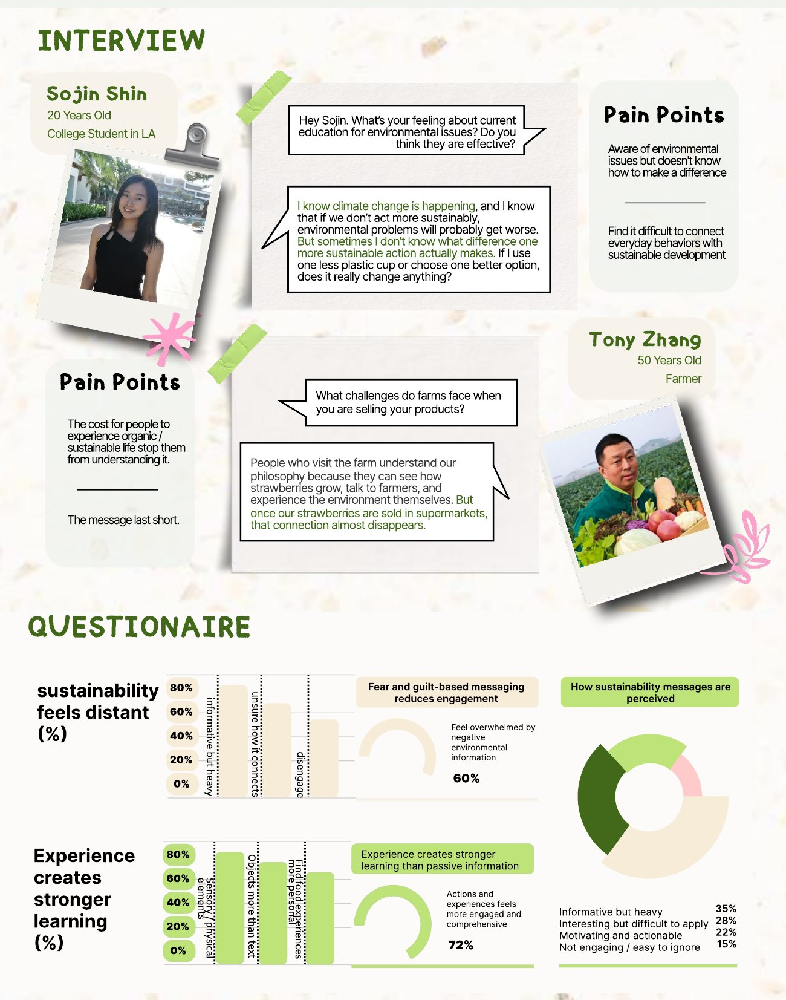
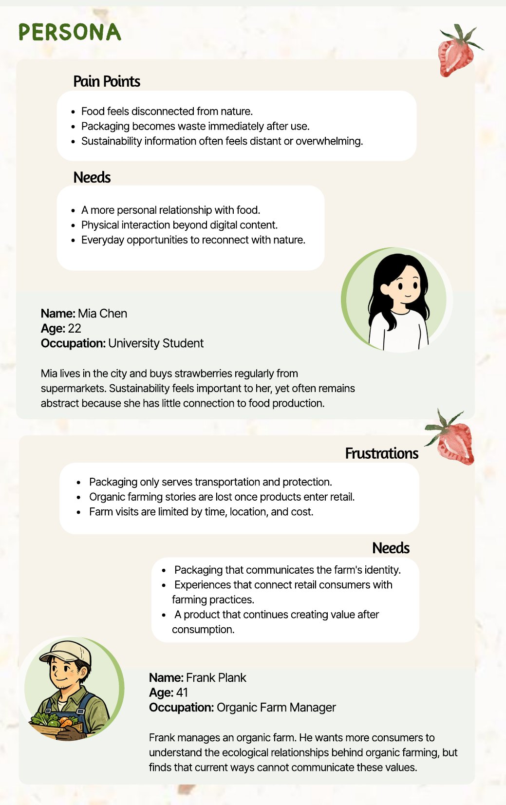
03 · Earth 土 · 化
People know that wasting food is wrong, yet they still do it, because they see food as a commodity they paid for rather than a gift from nature.
This led me to ask: how can I bring the connection between people and nature into a shopping experience that everyone can enjoy? My answer was to change what packaging does. Instead of ending as waste, it becomes the beginning of care: an AR game reveals the life behind the fruit, and the box itself turns into a planter.
Grow what you hold
Virtual strawberries grow exactly where the real ones sit in the package.
Reveal the invisible
Pollinators, companion plants, and soil life appear as players progress.
Nature gives back
Animals take some fruit and return the favor by pollinating and spreading seeds.
Seasonal growth
Growth follows sunlight and seasons, not instant rewards.
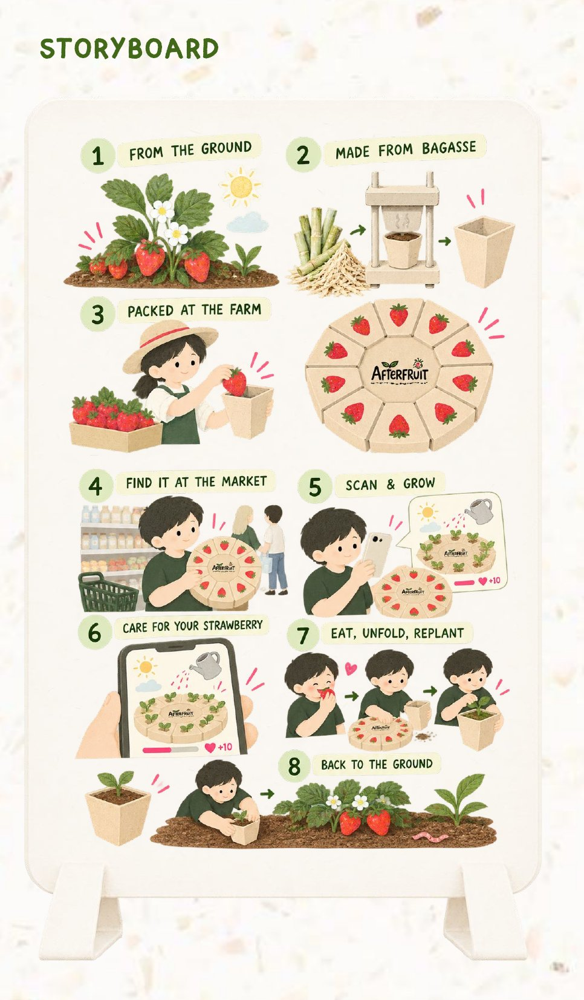
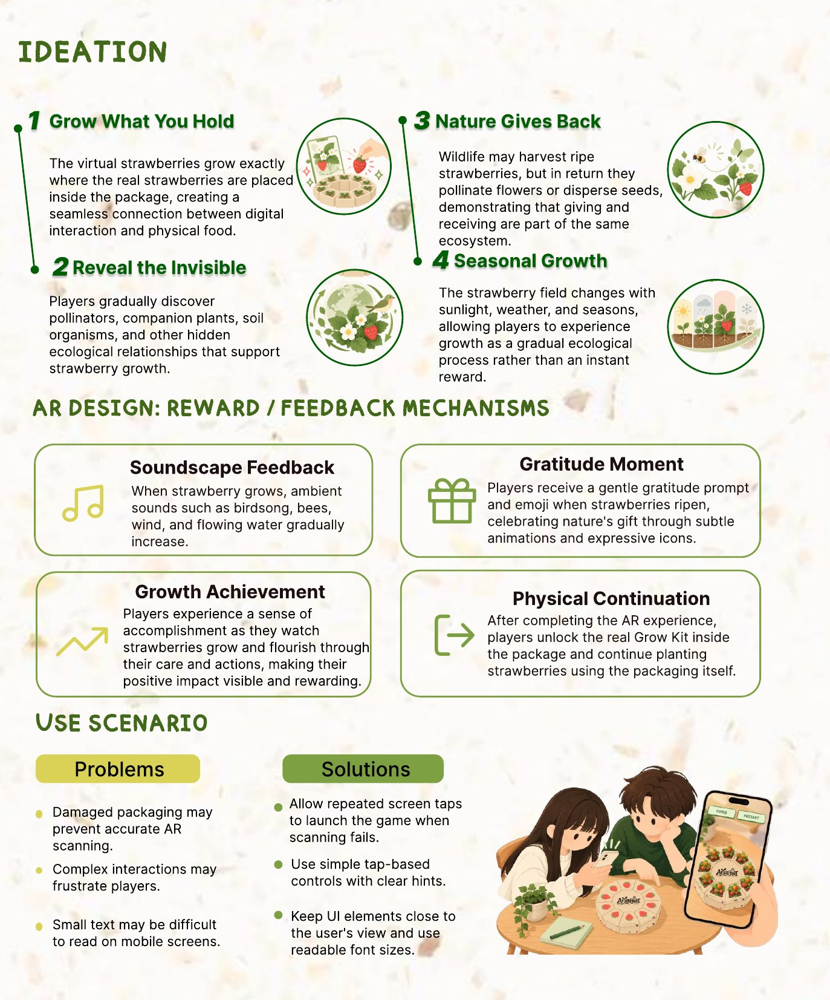
04 · Metal 金 · 收
I designed the game flow and every interaction across six levels: water, flowering, pollination, ripening, harvest, and reciprocity, where animals take strawberries and return hearts that grow into new fruit. Sound, models, and animation give each step clear feedback. I built the Unity prototype with AI-assisted coding, focusing my own time on the experience design and testing.
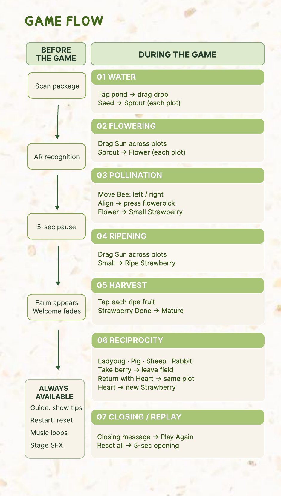
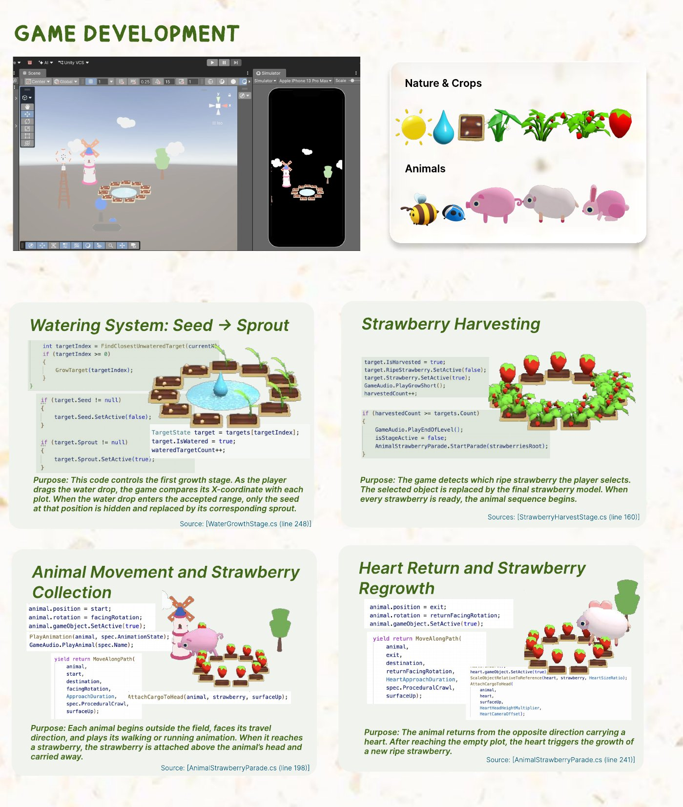
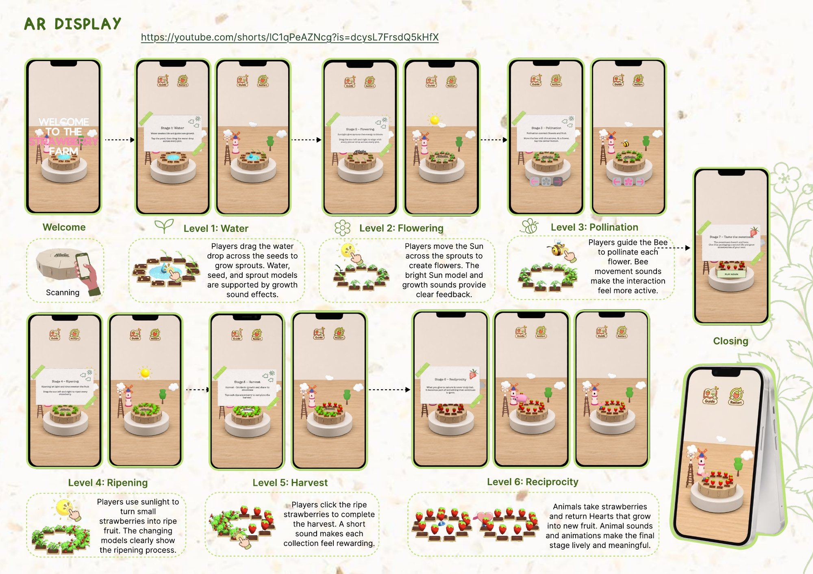
The packaging is molded from sugarcane bagasse, giving agricultural waste a new purpose: from the earth, back to the earth. It is made of eleven modular units that protect the fruit in transport, then come apart into individual planters so people can grow their own strawberries.
When I shared the idea with Tony’s Farm, they noted that most fruit producers have not yet designed packaging with sustainability in mind.
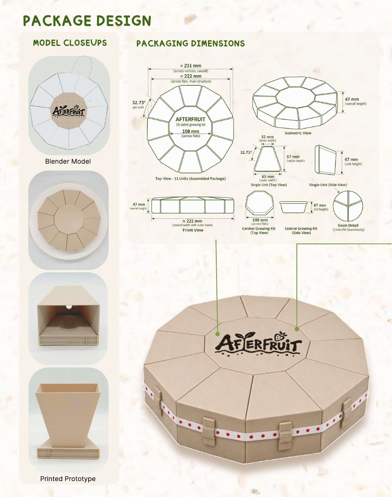
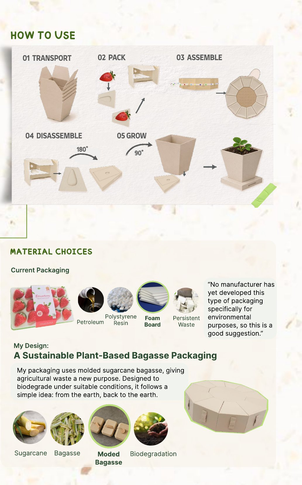
I mapped how AFTERFRUIT could work as a business, with organic farms and food brands as primary partners and urban consumers as the end audience.
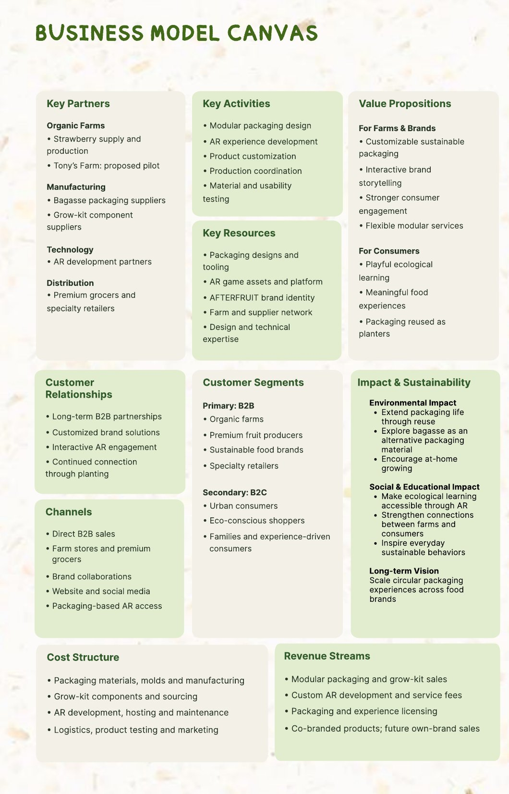
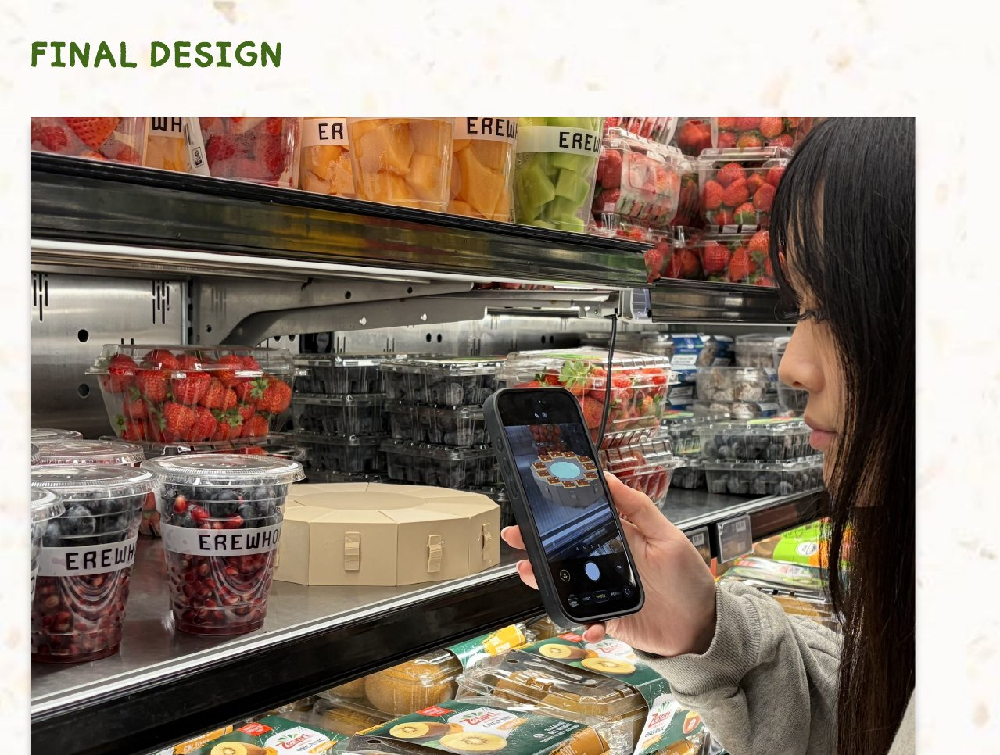
05 · Water 水 · 藏
Feedback from the farm
After finishing the project, I sent it back to Tony’s Farm for feedback. They pointed out that bagasse may not be water-resistant enough to protect fresh strawberries. A waterproof coating could help, but it raises new questions: how sustainable is the coating itself, and will a fully waterproof container still work as a planter? The packaging also needs ventilation holes to keep the strawberries fresh. Protection versus biodegradability, durability versus a home for something living: these are trade-offs I still need to test.
Experience
Expand beyond strawberries, make play more immersive and collaborative, and use real sunlight and water to nurture the virtual farm.
Material
Test bagasse formulas and moisture treatments, and refine how the units connect to simplify manufacturing and lower costs.
Partnerships
Work with packaging manufacturers, supermarkets, schools, and museums to test the experience in the real world.